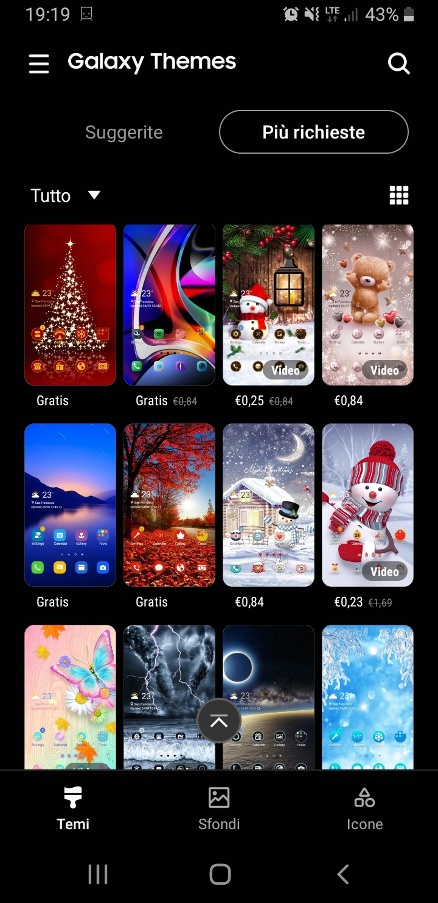

I telefoni e i tablet Android hanno un launcher cioè una schermata home diverso in base al modello e al
produttore del dispositivo in uso, il suo scopo è presentare la schermata di avvio del nostro sistema
operativo, visualizzare le nostre app e consentire l'accesso ai menu del sistema.
ogni shcermata home ha il suo tema predefinito ma si possano anche personalizzare.
inoltre alcuni temi per android sono gratis e alcuni a pagamento sotto è riportato un esempio di alcuni
temi.
